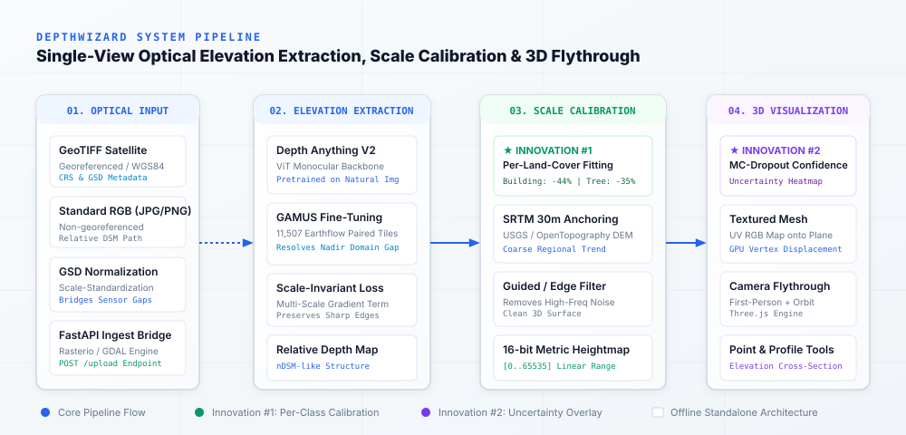

From a Single Image to a 3D Understanding of Terrain.
Automated single-view height estimation, semantic-aware scale calibration, and real-time interactive 3D terrain reconstruction from optical satellite and aerial imagery.
Why Single-View Height Estimation is Difficult
Traditional elevation mapping relies on multi-view geometry (stereo-photogrammetry), laser scanning (LiDAR), or Interferometric Synthetic Aperture Radar (InSAR). These methods are sensor-dependent, flight-intensive, and computationally demanding. Single optical images are abundant, but converting a 2D image into 3D topography presents two severe physical hurdles:
1. The Nadir Domain Gap
Foundational monocular depth models are trained almost exclusively on egocentric, horizontal perspective photos (e.g., indoor rooms, driving sequences). In nadir (top-down) remote sensing, conventional perspective vanishing points vanish. The model must learn structural height primarily from sun shadows, rooftop geometries, and textural gradients.
2. Scale & Offset Ambiguity
Monocular vision models predict relative depth (scale-agnostic structural variation) rather than true metric height. A tall skyscraper in a low-resolution tile and a low bungalow in an ultra-high-resolution crop can produce identical relative gradients. Without external anchoring, relative depth cannot be used for engineering or disaster risk assessment.
The 3-Stage End-to-End Architecture
DepthWizard operates via three mathematically decoupled stages, converting raw optical pixels into georeferenced metric surfaces and navigable 3D scenes.

Elevation Extraction
Deploys Depth Anything V2 (Vision Transformer backbone) fine-tuned on GAMUS. Enforces scale-invariant depth loss and multi-scale gradient constraints to sharply preserve building boundaries and terrain breaks.
Scale Calibration
Replaces conventional single global affine transforms with class-specific regression. Anchored against SRTM 30m, fitting unique scale and offset parameters for buildings, trees, and ground surfaces.
3D Flythrough & Uncertainty
Decodes 16-bit heightmaps to drive GPU vertex displacement on a textured Three.js mesh. Supports first-person WASD flythrough, cross-section profiling, and toggleable MC-dropout confidence heatmaps.
Two Major Technical Breakthroughs
DepthWizard introduces specific methodological solutions to remote sensing limitations.
Per-Land-Cover-Class Scale Calibration
Existing methods attempt a single affine fit H = a • h_rel + b across the entire satellite scene. However, neural depth models produce systematic biases depending on material reflectance and vertical morphology. Man-made buildings, permeable tree canopies, and flat tarmac experience divergent relative-depth scaling.
- Building Height Error: Reduced by ~44% vs global scene-wide fit.
- Tree Canopy Height Error: Reduced by ~35% vs baseline.
- Robust Regression: Iterative re-weighted least squares against SRTM 30m grid.
MC-Dropout & Confidence Quantification
A depth estimate is not equally reliable across all regions. Monocular predictions frequently degrade inside cast shadows, dark water bodies, or dense foliage. Instead of presenting the Digital Surface Model as uniformly certain, DepthWizard generates an explicit confidence variance map.
- Interactive Heatmap: Toggleable in the 3D viewer (RGB ↔ Confidence).
- Disaster Risk Governance: Informs decision-makers where predictions are trustworthy.
- Zero Cloud Overhead: Lightweight inference-time perturbation.
Terrain Cross-Section & Profile Analysis
Test DepthWizard's real output data generated from the benchmark tile: click points along the distance axis to inspect calculated metric elevation.
Decoupled Engineering Stack
Clear separation between the main DepthWizard ML/processing backend and this independent research evidence portal.
Main DepthWizard Software Application
Operational Processing Engine| Component | Technology | Role |
|---|---|---|
| Backbone | PyTorch / Depth Anything V2 | Vision Transformer monocular depth |
| Training | GAMUS Dataset | 11,507 paired tiles for nadir domain gap |
| Calibration | SRTM 30m / SciPy / NumPy | Per-land-cover affine regression |
| Geospatial I/O | Rasterio / GDAL | GeoTIFF CRS, bounds & GSD parsing |
| Local Bridge | FastAPI | Offline REST API (/upload, /process) |
| 3D Engine | Three.js | GPU vertex displacement & Flythrough |
This Research & Documentation Portal
Independent Evidence Website| Component | Technology | Role |
|---|---|---|
| Structure | Semantic HTML5 | Zero build steps, 100% accessible |
| Styling | CSS3 (Custom Properties) | Light research theme, responsive grids |
| Interactivity | Vanilla JavaScript | Native DOM, SVG profiling & modals |
| Hosting | Static GitHub Pages | Direct push deployment, no server needed |
| Dependencies | Zero external dependencies | No npm, no bundlers, no frameworks |
| Portability | Relative Paths | Works offline and directly via file:/// |